# cambia idioma de la consola de R a español:
Sys.setenv(LANG="es")
# usar 2 cifras significativas y tiende a evitar
# notación científica (ver ayuda de función: `options`):
options(digits = 2, scipen = 999)
# cargar librerías:
# Cargar librerías y suprimir mensajes y advertencias individualmente
suppressMessages(suppressWarnings(library(FactoClass)))
suppressMessages(suppressWarnings(library(Factoshiny)))
suppressMessages(suppressWarnings(library(factoextra)))
suppressMessages(suppressWarnings(library(plotly)))
suppressMessages(suppressWarnings(library(dplyr)))
suppressMessages(suppressWarnings(library(readxl)))
suppressMessages(suppressWarnings(library(ggplot2)))
suppressMessages(suppressWarnings(library(knitr)))
suppressMessages(suppressWarnings(library(htmlwidgets)))
suppressMessages(suppressWarnings(library(ggpubr)))Analisis Descriptivo Multivariado
Procesamiento de variables
datos <- read_excel("SUPPPORT2.xlsx")
datos<-datos%>%mutate(num.co=case_when(num.co>=4~ '4+',
TRUE ~ as.character(num.co)
))
datos[,c(2,3,4,5,7,13,19,20,21,24,40,41,43,44,45)]<-lapply(datos[,c(2,3,4,5,7,13,19,20,21,24,40,41,43,44,45)],as.factor)
datos# A tibble: 9,105 × 45
age sex dzgroup dzclass num.co edu income scoma charges totcst totmcst
<dbl> <fct> <fct> <fct> <fct> <dbl> <fct> <dbl> <dbl> <dbl> <dbl>
1 62.8 male Lung C… Cancer 0 11 $11-$… 0 9715 NA NA
2 60.3 female Cirrho… COPD/C… 2 12 $11-$… 44 34496 NA NA
3 52.7 female Cirrho… COPD/C… 2 12 under… 0 41094 NA NA
4 42.4 female Lung C… Cancer 2 11 under… 0 3075 NA NA
5 79.9 female ARF/MO… ARF/MO… 1 NA <NA> 26 50127 NA NA
6 93.0 male Coma Coma 1 14 <NA> 55 6884 NA NA
7 62.4 male CHF COPD/C… 1 14 $25-$… 0 30460 NA NA
8 86.8 male CHF COPD/C… 3 NA <NA> 26 30460 NA NA
9 85.7 male Lung C… Cancer 2 12 <NA> 26 NA NA NA
10 42.3 female Colon … Cancer 0 11 $25-$… 0 9914 NA NA
# ℹ 9,095 more rows
# ℹ 34 more variables: avtisst <dbl>, race <fct>, sps <dbl>, aps <dbl>,
# surv2m <dbl>, surv6m <dbl>, hday <dbl>, diabetes <fct>, dementia <fct>,
# ca <fct>, prg2m <dbl>, prg6m <dbl>, dnr <fct>, dnrday <dbl>, meanbp <dbl>,
# wblc <dbl>, hrt <dbl>, resp <dbl>, temp <dbl>, pafi <dbl>, alb <dbl>,
# bili <dbl>, crea <dbl>, sod <dbl>, ph <dbl>, glucose <dbl>, bun <dbl>,
# urine <dbl>, adlp <fct>, adls <fct>, adlsc <dbl>, death <fct>, …Sex
La variable Sex no parece nesesitar ninguna recategorizacion.
Nuevos Niveles:
female : f
male : m
dzgroup: Subcategoría enfermedad del paciente.
Nuevos Niveles:
Lung Cancer = L.C
Cirrhosis = C
ARF/MOSF w/ Sepsis = A.M.S
Coma = Coma
CHF = CHF
Colon Cancer = C.C
COPD = COPD
MOSF w/Malig = M.M
dzclass:Categoría enfermedad del paciante.
Nuevos Niveles:
ARF/MOSF = A.M
Cancer= C
Coma = Coma
COPD/CHF/Cirrhosis = C.C.C
race
Hay muy pocos asiaticos, negros, hispanos y otros por lo que se binzariza la variable en blancos y otros
nuevos nivels
white=w
other=o
datos<-datos%>%mutate(dzgroup=case_when(dzgroup=="Lung Cancer"~ 'L.C',
dzgroup=="Cirrhosis"~ 'C',
dzgroup=="ARF/MOSF w/Sepsis"~ 'A.M.S',
dzgroup=="Coma"~ 'Coma',
dzgroup=="CHF"~ 'CHF',
dzgroup=="Colon Cancer"~ 'C.C',
dzgroup=="COPD"~ 'COPD',
dzgroup=="MOSF w/Malig"~ 'M.M',
T~'NA'
))
datos<-datos%>%mutate(dzclass=case_when(dzclass=="ARF/MOSF"~ 'A.M',
dzclass=="Cancer"~ 'C',
dzclass=="Coma"~ 'Coma',
T~'C.C.C'
))
datos<-datos%>%mutate(race=case_when(race=="white"~ 'W',
T~'O'
))
datos<-datos%>%mutate(dementia=case_when(dementia==1~ 'yes',
T~'no'
))
datos<-datos%>%mutate(diabetes=case_when(diabetes==1~ 'yes',
T~'no'
))
datos<-datos%>%mutate(dnr=case_when(dnr=='dnr after sadm'~ 'yes',
dnr=='dnr before sadm'~ 'yes',
T~'no'
))
datos<-datos%>%mutate(death=case_when(death==1~ 'yes',
T~'no'
))
datos<-datos%>%mutate(hospdead=case_when(hospdead==1~ 'yes',
T~'no'
))
datos[,c(2,3,4,5,7,13,19,20,21,24,40,41,43,44,45)]<-lapply(datos[,c(2,3,4,5,7,13,19,20,21,24,40,41,43,44,45)],as.factor)ACP
De acuerdo con el análisis exploratorio de los datos, se decide utilizar como variables activas para el ACP aquellas que presenten menos valores faltantes (NA) y menos valores atípicos (outliers). Las variables seleccionadas son: “age”, “avtisst”, “surv2m”, “surv6m”, “meanbp”, “hrt” y “temp”.
outlier_count <- function(column) {
if (is.numeric(column)) { # Verificar si la columna es numérica
Q1 <- quantile(column, 0.25, na.rm = TRUE) # Primer cuartil
Q3 <- quantile(column, 0.75, na.rm = TRUE) # Tercer cuartil
IQR <- Q3 - Q1 # Rango intercuartil
lower_bound <- Q1 - 1.5 * IQR # Límite inferior
upper_bound <- Q3 + 1.5 * IQR # Límite superior
return(sum(column < lower_bound | column > upper_bound, na.rm = TRUE))
} else {
return(0) # Si no es numérico, no hay atípicos
}
}colores <- rep(c("red","blue","yellow","pink","green","orange"),5)
par(mfrow=c(2,3), mai=c(0.3,0.4,0.3,0.1), las=1, bty="n")
for(i in # Encuentra las posiciones de las columnas
match(c("age", "avtisst", "surv2m", "surv6m", "meanbp", "hrt", "temp"), names(datos))) boxplot(datos[,i], main=names(datos)[i], col=colores[i])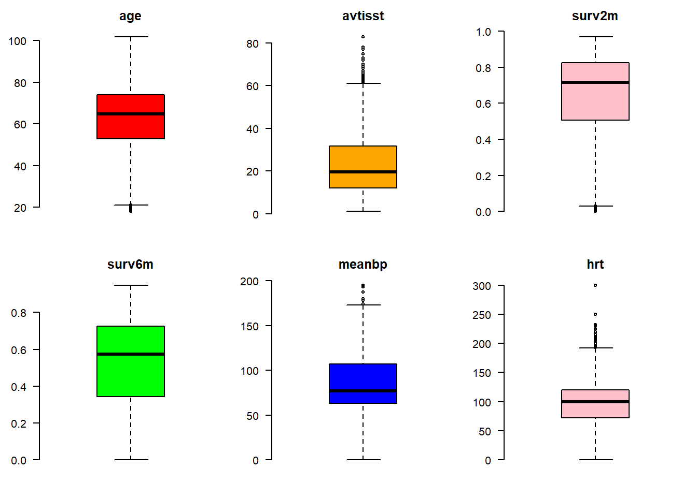
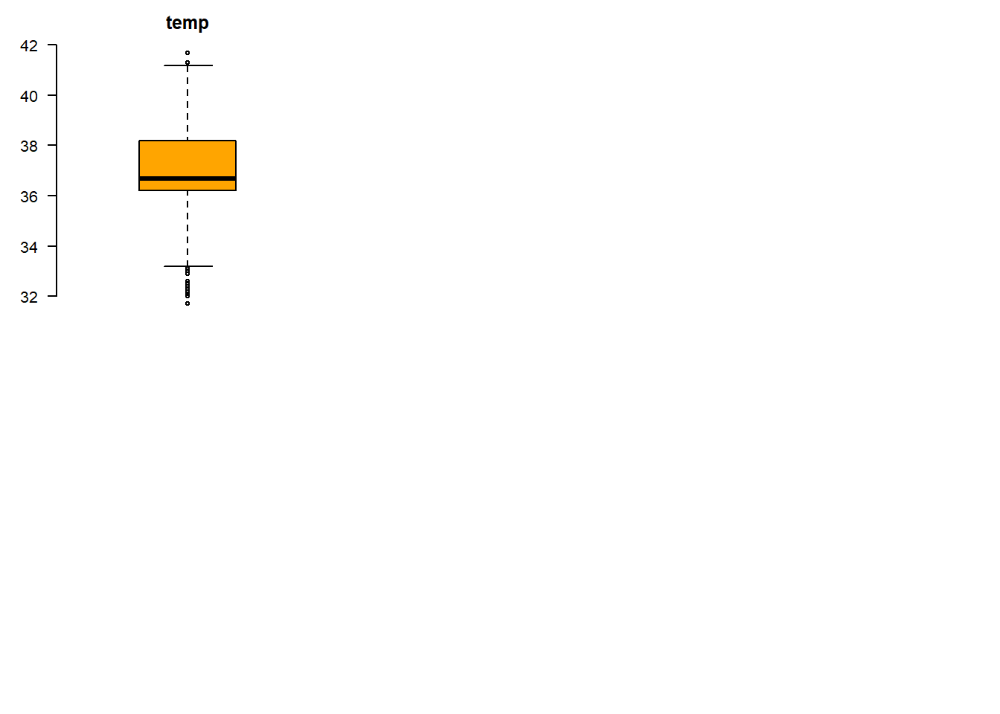
sapply(datos[,-c(2,3,4,5,7,13,19,20,21,24,40,41,43,44,45)], outlier_count) age edu scoma charges totcst totmcst avtisst sps aps surv2m
56 199 1955 912 749 495 43 283 178 307
surv6m hday prg2m prg6m dnrday meanbp wblc hrt resp temp
0 1543 0 0 799 6 399 40 313 14
pafi alb bili crea sod ph glucose bun urine adlsc
90 15 926 987 256 260 272 267 92 0 res.PCA<-PCA(datos,quali.sup=c(2,3,4,5,7,13,19,20,21,24,40,41,43,44,45),quanti.sup=c(6,9,10,11,14,15,18,22,23,25,27,29,31,32,33,34,35,36,37,38,39,42),graph=FALSE)Warning in PCA(datos, quali.sup = c(2, 3, 4, 5, 7, 13, 19, 20, 21, 24, 40, :
Missing values are imputed by the mean of the variable: you should use the
imputePCA function of the missMDA packageObservando el histograma de los valores propios divididos por la inercia total, se decide analizar cuatro ejes, dado que retienen alrededor del 40% de la variabilidad.
barplot(res.PCA$eig[,1]/sum(res.PCA$eig[,1]))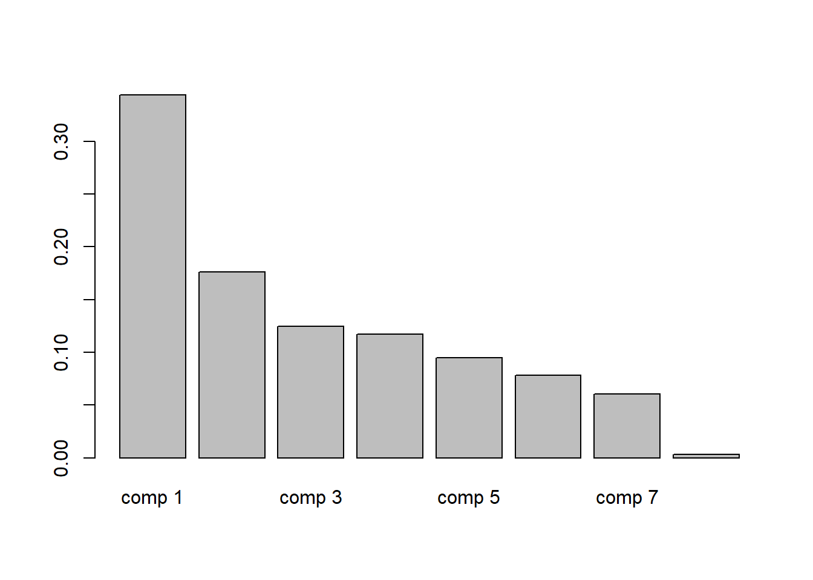
cumsum(res.PCA$eig[,1]/sum(res.PCA$eig[,1]))comp 1 comp 2 comp 3 comp 4 comp 5 comp 6 comp 7 comp 8
0.34 0.52 0.65 0.76 0.86 0.94 1.00 1.00 Las variables que más contribuyen a la construcción del primer eje son los índices de supervivencia Schoma y Avissst. En el segundo eje, las variables principales son la temperatura, la frecuencia cardíaca y la edad. En el tercer eje, predominan la presión arterial y la edad, mientras que en el cuarto eje destacan la edad, la temperatura y la presión arterial.
fviz_contrib(res.PCA, choice = "var", axes = 1)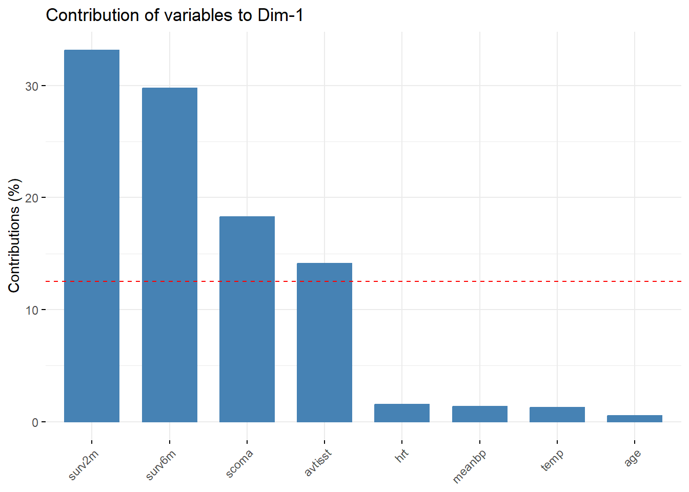
fviz_contrib(res.PCA, choice = "var", axes = 2)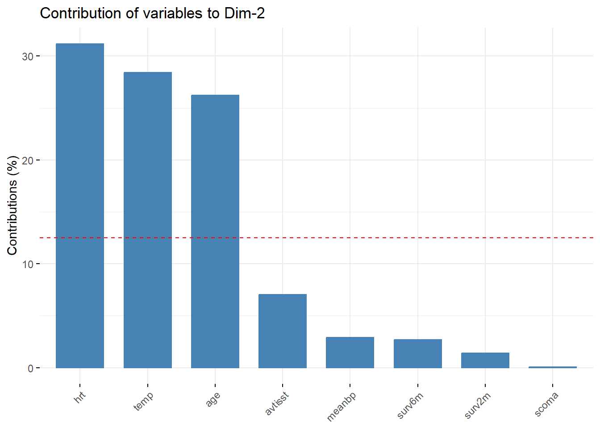
fviz_contrib(res.PCA, choice = "var", axes = 3)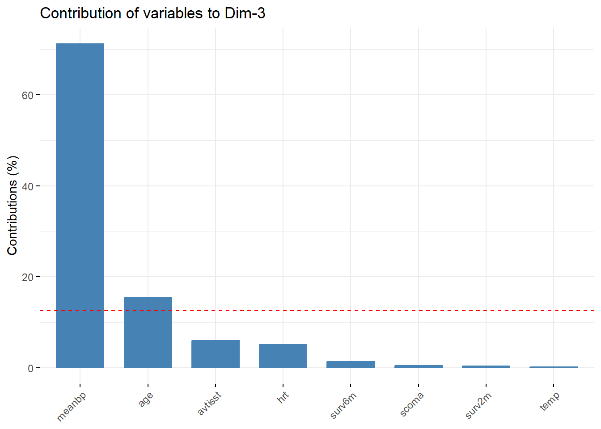
fviz_contrib(res.PCA, choice = "var", axes = 4)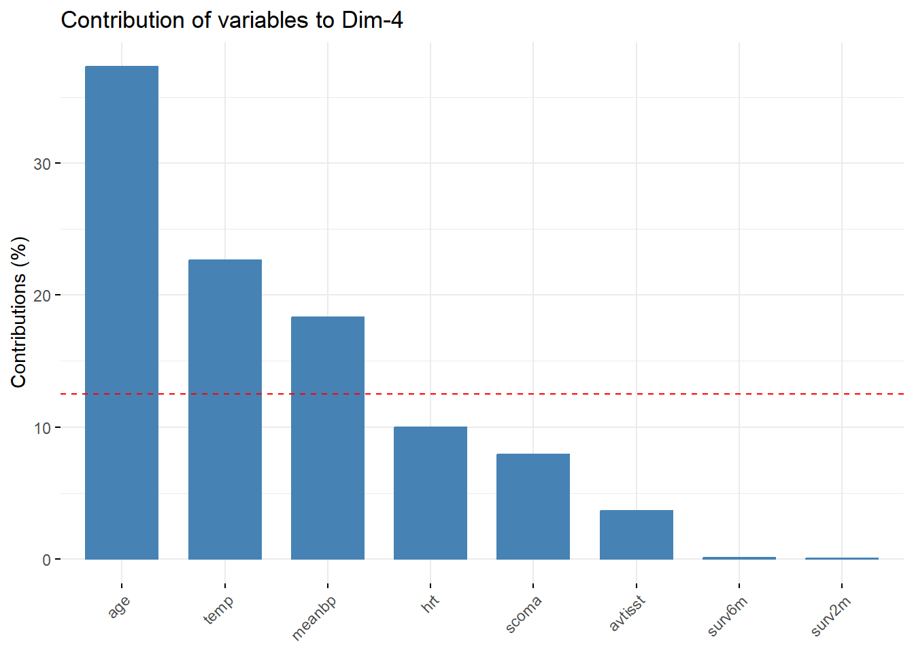
Se grafican los círculos de correlaciones correspondientes a tres planos factoriales, incluyendo únicamente las variables ilustrativas y activas con un \(cos^2 > 0.2\). Esto se realiza para facilitar la lectura y mejorar la interpretación de los resultados.
umbral_cos2 <- 0.2
# Filtrar las variables según su cos2
variables_filtradas <- rownames(res.PCA$var$cos2)[apply(res.PCA$var$cos2[,c(1,2)], 1, sum) >= umbral_cos2]
# Filtrar las variables según su cos2
variables_filtradas2 <- rownames(res.PCA$quanti.sup$cos2)[apply(res.PCA$quanti$cos2[,c(1,2)], 1, sum) >= umbral_cos2]
variables_filtradas<-c(variables_filtradas,variables_filtradas2)
fviz_pca_var(res.PCA, axes=c(1,2), col.var="cos2",
select.var = list(name =variables_filtradas),
gradient.cols = c("darkred",
"darkorange",
"darkgreen"))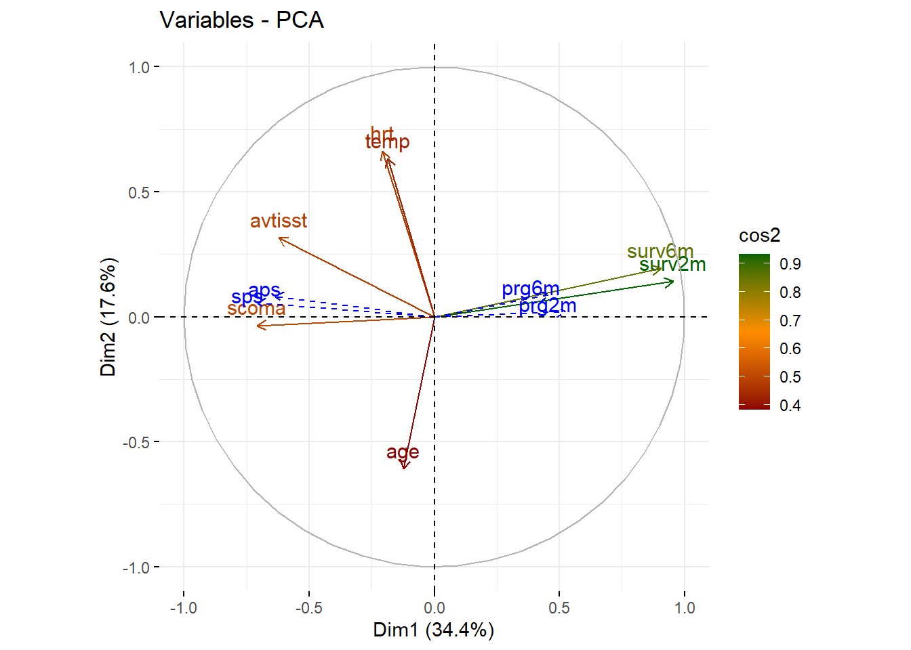
En el primer eje se puede observar una correlación positiva con el índice y la estimación de supervivencia de los pacientes, y una correlación negativa con el score de coma y la puntuación promedio del sistema de calificación de la intervención terapéutica (TISS), que cuantifica la intensidad del tratamiento suministrado al paciente.
El segundo eje presenta una correlación positiva con el TISS, la temperatura y la frecuencia cardíaca, y una correlación negativa con la edad.
umbral_cos2 <- 0.2
# Filtrar las variables según su cos2
variables_filtradas <- rownames(res.PCA$var$cos2)[apply(res.PCA$var$cos2[,c(1,3)], 1, sum) >= umbral_cos2]
# Filtrar las variables según su cos2
variables_filtradas2 <- rownames(res.PCA$quanti.sup$cos2)[apply(res.PCA$quanti$cos2[,c(1,3)], 1, sum) >= umbral_cos2]
variables_filtradas<-c(variables_filtradas,variables_filtradas2)
fviz_pca_var(res.PCA, axes=c(1,3), col.var="cos2",
select.var = list(name =variables_filtradas),
gradient.cols = c("darkred",
"darkorange",
"darkgreen"))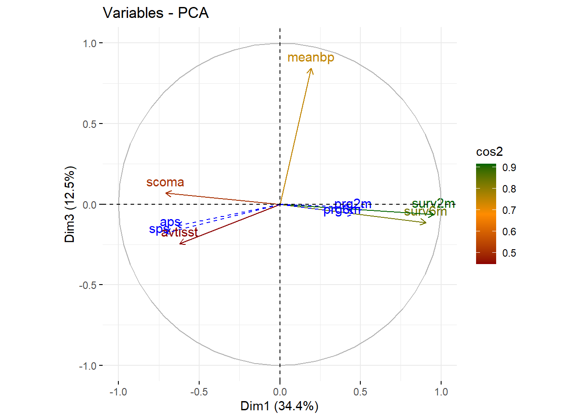
En el tercer eje se observa una alta correlación positiva con la presión arterial, mientras que en el cuarto eje se identifica una correlación positiva con la temperatura, la edad y la presión arterial.
umbral_cos2 <- 0.2
# Filtrar las variables según su cos2
variables_filtradas <- rownames(res.PCA$var$cos2)[apply(res.PCA$var$cos2[,c(1,4)], 1, sum) >= umbral_cos2]
# Filtrar las variables según su cos2
variables_filtradas2 <- rownames(res.PCA$quanti.sup$cos2)[apply(res.PCA$quanti$cos2[,c(1,4)], 1, sum) >= umbral_cos2]
variables_filtradas<-c(variables_filtradas,variables_filtradas2)
fviz_pca_var(res.PCA, axes=c(1,4), col.var="cos2",
select.var = list(name =variables_filtradas),
gradient.cols = c("darkred",
"darkorange",
"darkgreen"))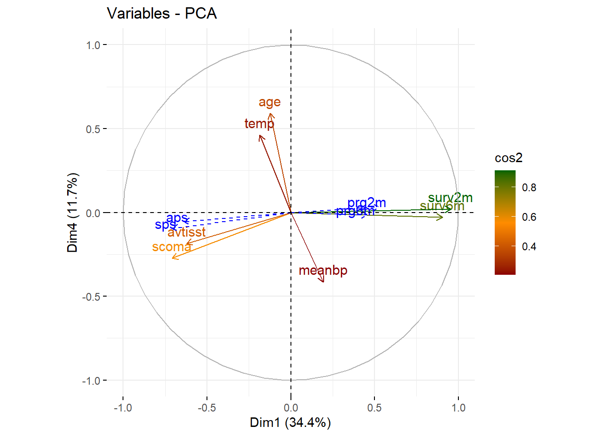
Para el gráfico de los promedios de las variables ilustrativas, se seleccionan aquellas que tengan valores test mayores a 3.
umbral <- 3
quali.sup <- as.data.frame(res.PCA$quali.sup$coord[apply(abs(res.PCA$quali.sup$v.test[,c(1,2)]), 1, max) >= umbral,])
quali.sup$name <- rownames(res.PCA$quali.sup$cos2)[apply(abs(res.PCA$quali.sup$v.test[,c(1,2)]), 1, max) >= umbral]
# Plot
ggscatter(quali.sup, x = "Dim.1", y = "Dim.2", label = "name",
ylim = c(-2.5, 2.5), xlim = c(-2.5, 2.5),
ggtheme = theme_minimal()
)+
geom_vline(xintercept = 0, linetype = "dashed")+
geom_hline(yintercept = 0, linetype = "dashed")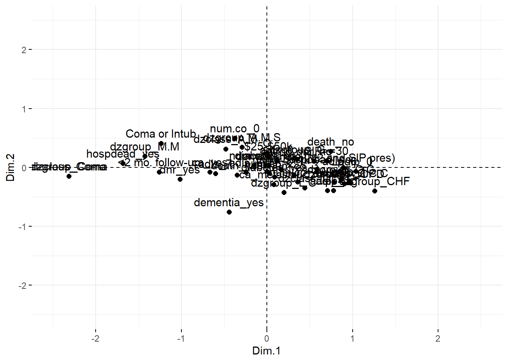
res.PCA$quali.sup$v.test Dim.1 Dim.2 Dim.3 Dim.4 Dim.5
female -2.332 -1.20 3.033 1.7466 0.9668
male 2.332 1.20 -3.033 -1.7466 -0.9668
dzgroup_A.M.S -13.369 21.73 -13.064 -5.1702 3.7811
dzgroup_C 4.943 2.68 -3.358 -7.2961 -2.8515
dzgroup_C.C 12.156 -3.99 5.613 2.3167 2.6549
dzgroup_CHF 30.684 -13.64 -2.604 8.7531 -1.5187
dzgroup_Coma -35.229 -3.14 10.545 -13.9374 20.9100
dzgroup_COPD 17.954 -7.73 7.825 11.6772 -4.1807
dzgroup_L.C 3.818 -11.34 9.580 2.8130 -8.7274
dzgroup_M.M -23.893 4.40 -4.157 -1.7908 -9.3892
dzclass_A.M -25.913 23.58 -14.991 -6.0112 -1.3636
dzclass_C 10.872 -11.90 11.475 3.7942 -5.5218
dzclass_C.C.C 38.110 -14.36 1.518 10.9176 -5.3599
dzclass_Coma -35.229 -3.14 10.545 -13.9374 20.9100
num.co_0 -8.309 15.43 -4.925 -10.1174 8.5916
num.co_1 -6.183 2.17 2.155 -0.8182 -0.9480
num.co_2 0.935 -4.77 -0.550 4.6595 -3.8257
num.co_3 7.758 -4.79 1.393 2.8399 -0.9804
num.co_4+ 7.562 -7.24 1.150 2.1333 -1.2137
$11-$25k 2.734 -0.34 1.036 -0.8416 -0.0428
$25-$50k 0.392 5.56 -3.096 -3.0296 -1.0077
>$50k 1.347 3.00 -2.608 -2.2473 0.7184
under $11k 6.416 -2.05 2.865 -0.5966 -2.4480
O 0.166 10.21 -4.783 -13.3820 -0.0056
W -0.166 -10.21 4.783 13.3820 0.0056
diabetes_no -2.427 6.33 -0.899 -3.4465 -4.6872
diabetes_yes 2.427 -6.33 0.899 3.4465 4.6872
dementia_no 4.663 11.11 -8.424 -9.4508 -4.2138
dementia_yes -4.663 -11.11 8.424 9.4508 4.2138
ca_metastatic 2.339 -11.67 10.345 4.1038 -8.3944
ca_no 9.182 11.76 -9.725 -6.3453 9.7861
ca_yes -15.381 -2.54 1.286 3.9354 -3.6526
dnr_no 43.044 11.75 -7.565 -4.6886 1.9941
dnr_yes -43.044 -11.75 7.565 4.6886 -1.9941
adlp_0 30.049 -2.69 -0.996 1.4519 -1.5976
adlp_1 16.082 -5.46 3.582 3.7756 -0.7972
adlp_2 10.664 -4.02 0.941 3.6901 -1.0973
adlp_3 5.773 -4.11 0.020 2.8558 -1.5902
adlp_4 4.772 -3.68 0.810 2.4465 -0.7222
adlp_5 5.806 -2.59 1.029 -0.8308 -2.8662
adlp_6 5.107 -0.50 -0.660 -0.6054 -1.9379
adlp_7 1.821 -0.90 0.065 0.0037 -2.4080
adls_0 4.660 7.72 -4.376 -6.4864 0.3349
adls_1 0.738 -1.37 2.494 2.6144 0.8007
adls_2 0.695 -1.26 2.338 4.2430 -0.9251
adls_3 0.312 -2.05 1.485 2.2037 -1.9980
adls_4 1.082 -1.20 2.408 2.0281 -0.3825
adls_5 -2.075 -0.85 1.732 1.7530 -3.4469
adls_6 -3.004 -1.50 1.381 -1.0198 -0.7011
adls_7 -6.420 -1.57 2.241 -1.1627 2.4175
death_no 29.256 15.19 -8.203 -5.0605 5.1246
death_yes -29.256 -15.19 8.203 5.0605 -5.1246
hospdead_no 57.225 -3.39 4.779 8.3157 2.9831
hospdead_yes -57.225 3.39 -4.779 -8.3157 -2.9831
<2 mo. follow-up -52.345 -4.50 1.120 -3.6616 -3.9992
adl>=4 (>=5 if sur) 0.016 2.57 3.534 2.3771 2.3516
Coma or Intub -4.780 2.21 -3.008 -0.0389 2.0380
no(M2 and SIP pres) 36.402 -0.13 -1.926 1.4774 1.5914
SIP>=30 10.271 2.31 -1.915 -0.2273 -1.5321res.PCA$quali.sup$coord Dim.1 Dim.2 Dim.3 Dim.4 Dim.5
female -0.04601 -0.0170 0.0360 0.0201 0.010030
male 0.03573 0.0132 -0.0280 -0.0156 -0.007789
dzgroup_A.M.S -0.29314 0.3411 -0.1725 -0.0662 0.043594
dzgroup_C 0.35354 0.1374 -0.1446 -0.3047 -0.107245
dzgroup_C.C 0.86585 -0.2033 0.2408 0.0963 0.099439
dzgroup_CHF 1.25852 -0.4005 -0.0643 0.2096 -0.032753
dzgroup_Coma -2.31446 -0.1477 0.4172 -0.5346 0.722324
dzgroup_COPD 0.90561 -0.2791 0.2377 0.3439 -0.110882
dzgroup_L.C 0.19947 -0.4242 0.3014 0.0858 -0.239734
dzgroup_M.M -1.42631 0.1882 -0.1495 -0.0624 -0.294719
dzclass_A.M -0.48401 0.3153 -0.1686 -0.0656 -0.013392
dzclass_C 0.43975 -0.3445 0.2795 0.0896 -0.117441
dzclass_C.C.C 0.97865 -0.2640 0.0235 0.1637 -0.072373
dzclass_Coma -2.31446 -0.1477 0.4172 -0.5346 0.722324
num.co_0 -0.37495 0.4983 -0.1338 -0.2666 0.203859
num.co_1 -0.15313 0.0385 0.0321 -0.0118 -0.012346
num.co_2 0.02720 -0.0992 -0.0096 0.0791 -0.058511
num.co_3 0.31317 -0.1383 0.0339 0.0669 -0.020809
num.co_4+ 0.35468 -0.2429 0.0325 0.0584 -0.029933
$11-$25k 0.10588 -0.0094 0.0242 -0.0190 -0.000871
$25-$50k 0.01880 0.1908 -0.0895 -0.0849 -0.025421
>$50k 0.08217 0.1309 -0.0958 -0.0800 0.023044
under $11k 0.16506 -0.0377 0.0444 -0.0090 -0.033113
O 0.00559 0.2463 -0.0971 -0.2633 -0.000099
W -0.00149 -0.0656 0.0258 0.0701 0.000026
diabetes_no -0.02079 0.0388 -0.0046 -0.0172 -0.021110
diabetes_yes 0.08567 -0.1600 0.0191 0.0710 0.086991
dementia_no 0.01486 0.0253 -0.0162 -0.0176 -0.007062
dementia_yes -0.44226 -0.7542 0.4812 0.5234 0.210162
ca_metastatic 0.08033 -0.2868 0.2139 0.0823 -0.151568
ca_no 0.11498 0.1054 -0.0733 -0.0464 0.064441
ca_yes -0.66979 -0.0791 0.0337 0.1001 -0.083633
dnr_no 0.55028 0.1075 -0.0582 -0.0350 0.013404
dnr_yes -1.01789 -0.1988 0.1077 0.0647 -0.024795
adlp_0 1.03500 -0.0664 -0.0207 0.0292 -0.028933
adlp_1 0.96074 -0.2334 0.1289 0.1317 -0.025043
adlp_2 0.95312 -0.2571 0.0506 0.1926 -0.051568
adlp_3 0.77555 -0.3950 0.0016 0.2240 -0.112330
adlp_4 0.70620 -0.3903 0.0721 0.2114 -0.056190
adlp_5 0.78266 -0.2501 0.0835 -0.0654 -0.203160
adlp_6 0.85123 -0.0599 -0.0662 -0.0589 -0.169848
adlp_7 0.42179 -0.1494 0.0091 0.0005 -0.293327
adls_0 0.11255 0.1335 -0.0636 -0.0915 0.004253
adls_1 0.03592 -0.0477 0.0731 0.0743 0.020487
adls_2 0.05184 -0.0672 0.1050 0.1848 -0.036293
adls_3 0.02809 -0.1325 0.0806 0.1159 -0.094640
adls_4 0.11062 -0.0879 0.1482 0.1210 -0.020558
adls_5 -0.18239 -0.0537 0.0917 0.0899 -0.159274
adls_6 -0.24269 -0.0869 0.0672 -0.0481 -0.029786
adls_7 -0.60372 -0.1057 0.1269 -0.0638 0.119534
death_no 0.74331 0.2762 -0.1255 -0.0751 0.068462
death_yes -0.34810 -0.1293 0.0588 0.0352 -0.032062
hospdead_no 0.58855 -0.0250 0.0296 0.0499 0.016132
hospdead_yes -1.68210 0.0713 -0.0846 -0.1427 -0.046107
<2 mo. follow-up -1.25964 -0.0774 0.0162 -0.0514 -0.050602
adl>=4 (>=5 if sur) 0.00082 0.0956 0.1106 0.0722 0.064282
Coma or Intub -1.23586 0.4091 -0.4683 -0.0059 0.277040
no(M2 and SIP pres) 0.88938 -0.0023 -0.0283 0.0211 0.020444
SIP>=30 0.69496 0.1119 -0.0780 -0.0090 -0.054509plot.PCA(res.PCA, axes = c(1,2),label =c('none'),choix = c("ind"))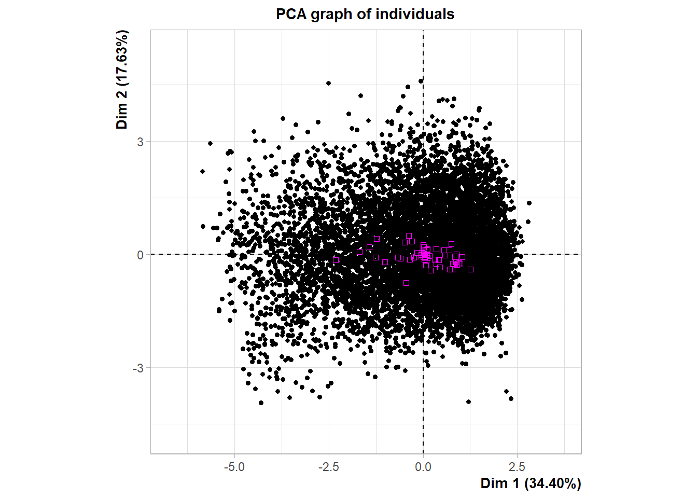
plot.PCA(res.PCA, axes = c(1,3),label =c('none'),choix = c("ind"))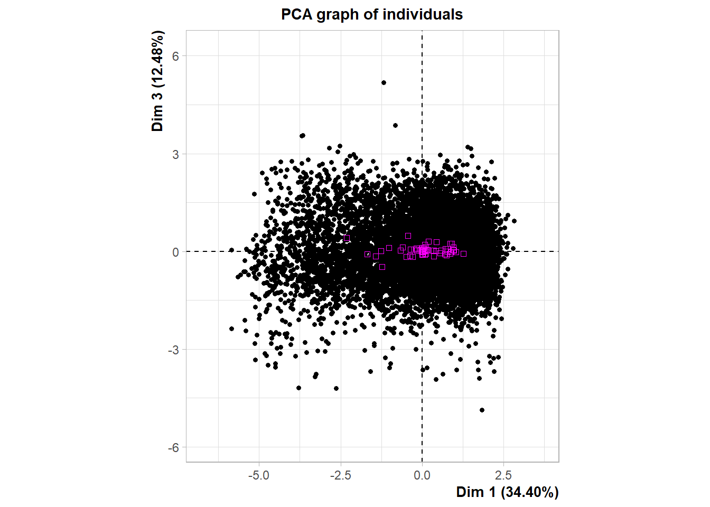
plot.PCA(res.PCA, axes = c(1,4),label =c('none'),choix = c("ind"))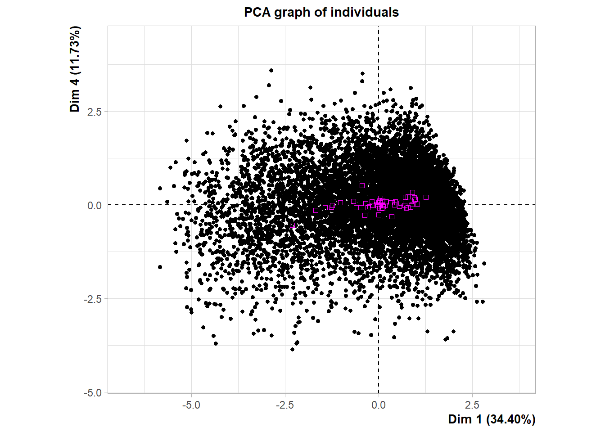
ACP para individuos que mueren en el hospital
m_hosp <- datos%>%
filter(hospdead=="yes")%>%
as.data.frame()
m_hosp$hospdead <- as.factor(m_hosp$hospdead)
m_hosp$death <- as.factor(m_hosp$death)
nrow(m_hosp)[1] 2360sapply(m_hosp[,-c(2,3,4,5,7,13,19,20,21,24,40,41,43,44,45)], outlier_count) age edu scoma charges totcst totmcst avtisst sps aps surv2m
10 56 0 212 153 100 4 89 17 0
surv6m hday prg2m prg6m dnrday meanbp wblc hrt resp temp
0 171 0 0 206 2 91 7 7 3
pafi alb bili crea sod ph glucose bun urine adlsc
30 6 251 190 29 74 65 62 19 0 res<-PCA(m_hosp,quali.sup=c(2,3,4,5,7,13,19,20,21,24,40,41,43,44,45),quanti.sup=c(6,10,11,22,23,31,32,33,36,38,39),graph=FALSE)Warning in PCA(m_hosp, quali.sup = c(2, 3, 4, 5, 7, 13, 19, 20, 21, 24, :
Missing values are imputed by the mean of the variable: you should use the
imputePCA function of the missMDA packagebarplot(res$eig[,1]/sum(res$eig[,1]))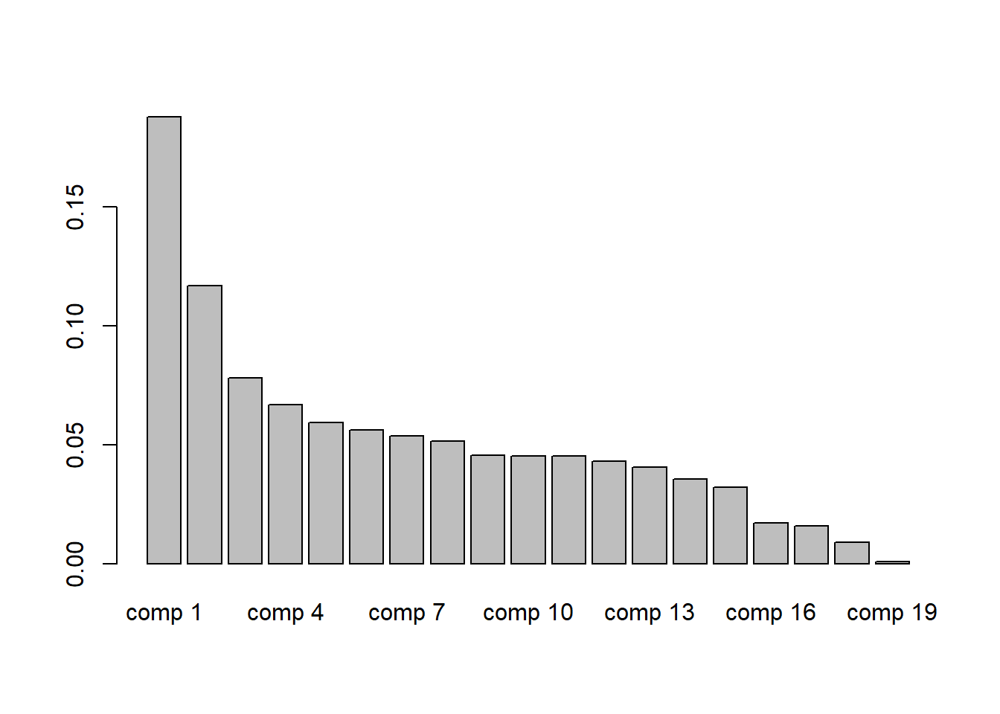
cumsum(res$eig[,1]/sum(res$eig[,1])) comp 1 comp 2 comp 3 comp 4 comp 5 comp 6 comp 7 comp 8 comp 9 comp 10
0.19 0.30 0.38 0.45 0.51 0.56 0.62 0.67 0.72 0.76
comp 11 comp 12 comp 13 comp 14 comp 15 comp 16 comp 17 comp 18 comp 19
0.81 0.85 0.89 0.93 0.96 0.97 0.99 1.00 1.00 Se toman 4 ejes para el análisis.
fviz_contrib(res, choice = "var", axes = 1)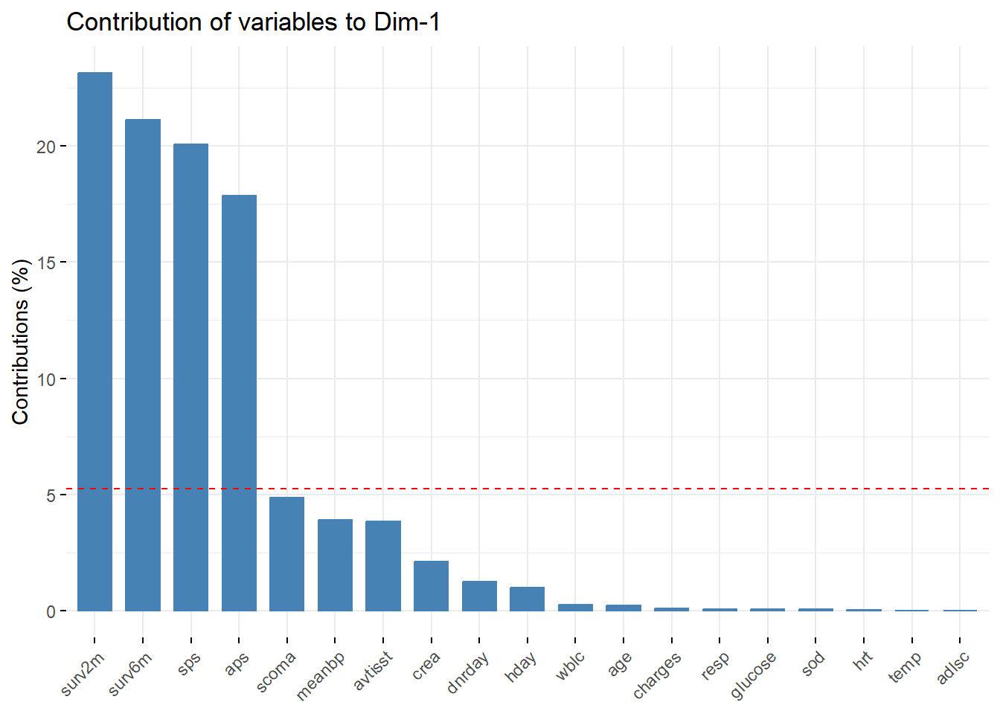
fviz_contrib(res, choice = "var", axes = 2)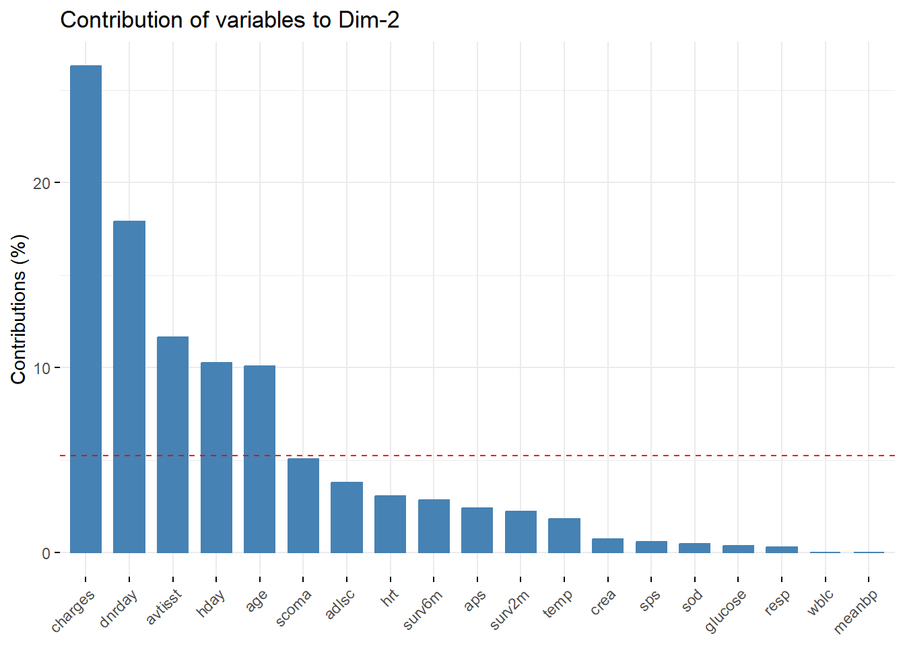
fviz_contrib(res, choice = "var", axes = 3)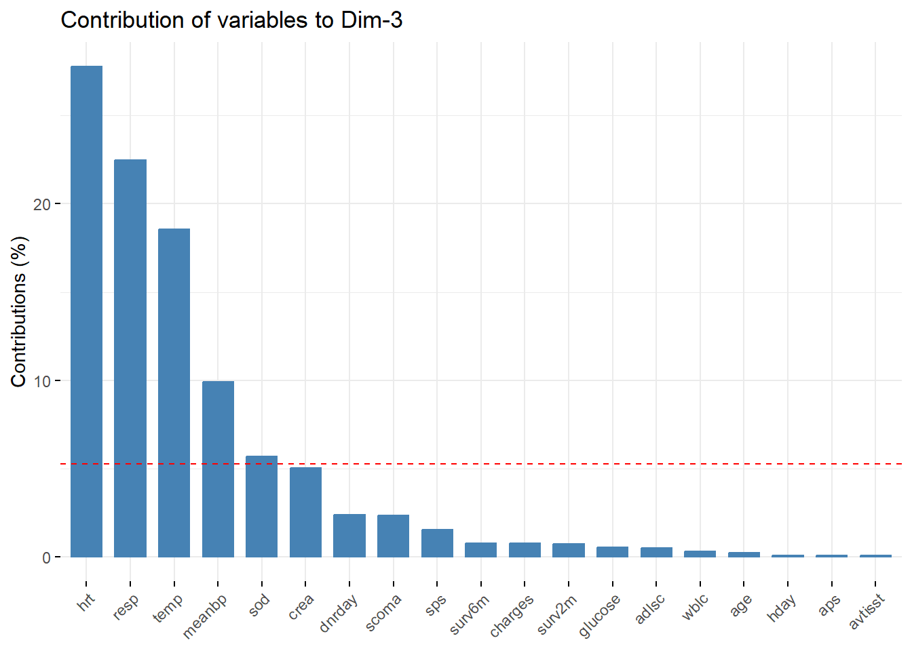
fviz_contrib(res, choice = "var", axes = 4)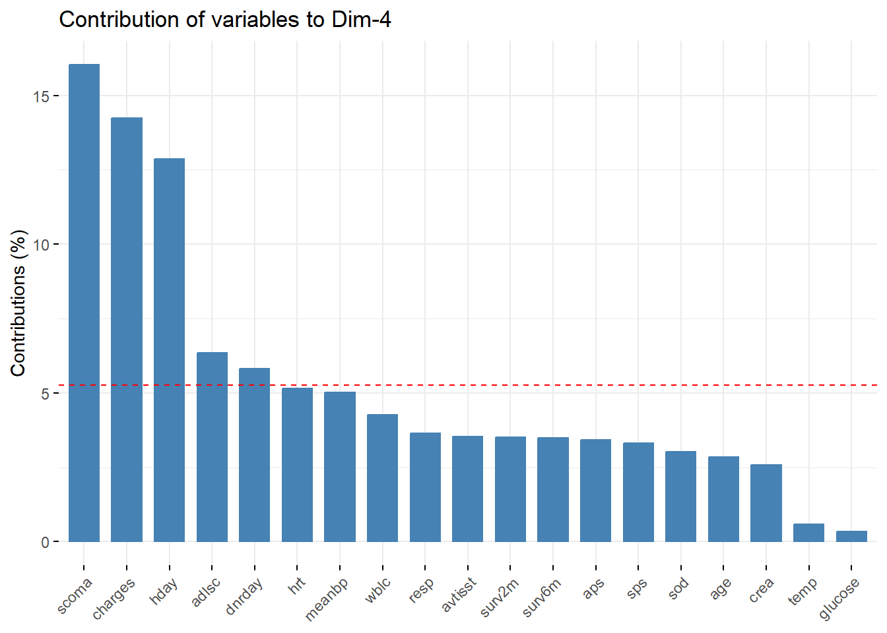
Las variables que más contribuyen al primer eje son las relacionadas con las estimaciones de supervivencia y los soportes fisiológico y psicológico, por lo que separa a los individuos que se estima tienen una probabilidad más alta de sobrevivir de los que no, teniendo que estos últimos tienden a recibir una mayor cantidad de asistencia.
Las variables que más contribuyen al segundo eje son aquellas relacionadas con los cargos hospitalarios y la edad, siendo que los individuos más jóvenes tienden a tener mayores cargos hospitalarios.
Las variables que más contribuyen al tercer eje son varaibles relacionadas con características de salud como la frecuencia respiratoria o la temperatura corporal y las que más contribuyen al 4 eje son los días de coma y los cargos hospitalarios.
umbral_cos2 <- 0.2
# Filtrar las variables según su cos2
variables_filtradas <- rownames(res$var$cos2)[apply(res$var$cos2[,c(1,2)], 1, sum) >= umbral_cos2]
# Filtrar las variables según su cos2
variables_filtradas2 <- rownames(res$quanti.sup$cos2)[apply(res$quanti$cos2[,c(1,2)], 1, sum) >= umbral_cos2]
variables_filtradas<-c(variables_filtradas,variables_filtradas2)
fviz_pca_var(res, axes=c(1,2), col.var="cos2",
select.var = list(name =variables_filtradas),
gradient.cols = c("darkred",
"darkorange",
"darkgreen"))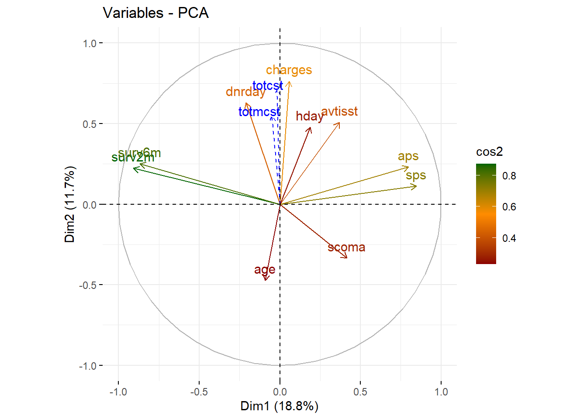
Se observa que las peronas que presentan índices de supervivencia más altos, suelen recibir menos soportes fisiológicos y psicológicos.
variables_filtradas <- rownames(res$var$cos2)[apply(res$var$cos2[,c(2,3)], 1, sum) >= umbral_cos2]
# Filtrar las variables según su cos2
variables_filtradas2 <- rownames(res$quanti.sup$cos2)[apply(res$quanti$cos2[,c(2,3)], 1, sum) >= umbral_cos2]
variables_filtradas<-c(variables_filtradas,variables_filtradas2)
fviz_pca_var(res, axes=c(2,3), col.var="cos2",
select.var = list(name =variables_filtradas),
gradient.cols = c("darkred",
"darkorange",
"darkgreen"))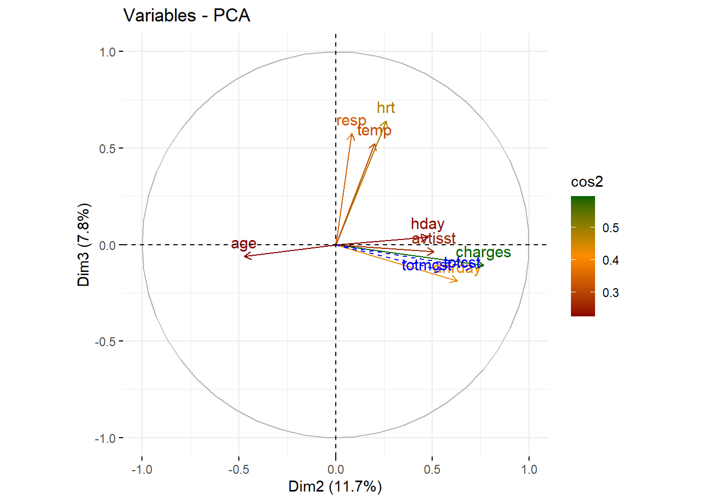
variables_filtradas <- rownames(res$var$cos2)[apply(res$var$cos2[,c(3,4)], 1, sum) >= umbral_cos2]
# Filtrar las variables según su cos2
variables_filtradas2 <- rownames(res$quanti.sup$cos2)[apply(res$quanti$cos2[,c(3,4)], 1, sum) >= umbral_cos2]
variables_filtradas<-c(variables_filtradas,variables_filtradas2)
fviz_pca_var(res, axes=c(3,4), col.var="cos2",
select.var = list(name =variables_filtradas),
gradient.cols = c("darkred",
"darkorange",
"darkgreen"))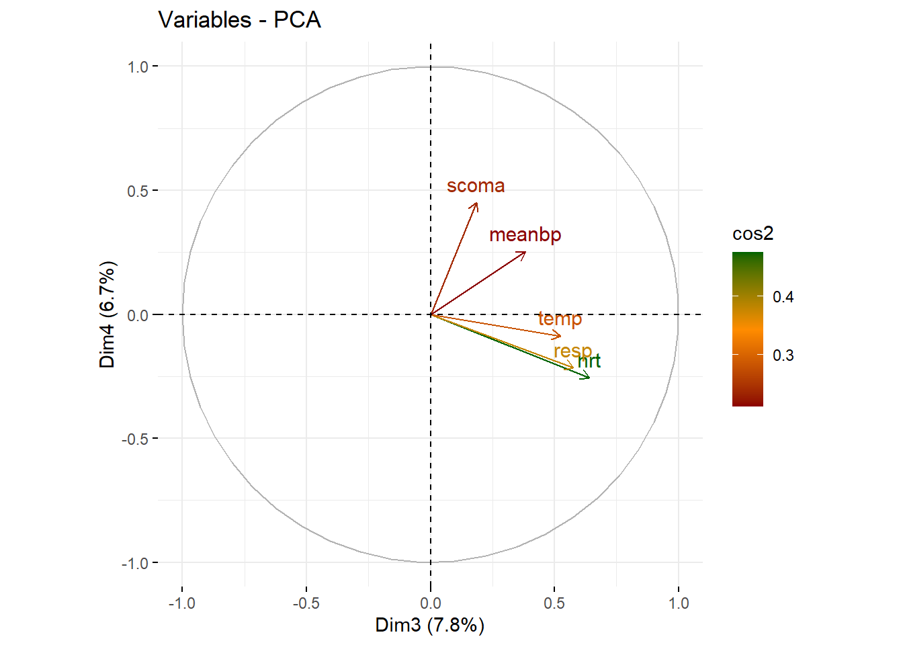
variables_filtradas <- rownames(res$var$cos2)[apply(res$var$cos2[,c(2,4)], 1, sum) >= umbral_cos2]
# Filtrar las variables según su cos2
variables_filtradas2 <- rownames(res$quanti.sup$cos2)[apply(res$quanti$cos2[,c(2,4)], 1, sum) >= umbral_cos2]
variables_filtradas<-c(variables_filtradas,variables_filtradas2)
fviz_pca_var(res, axes=c(2,4), col.var="cos2",
select.var = list(name =variables_filtradas),
gradient.cols = c("darkred",
"darkorange",
"darkgreen"))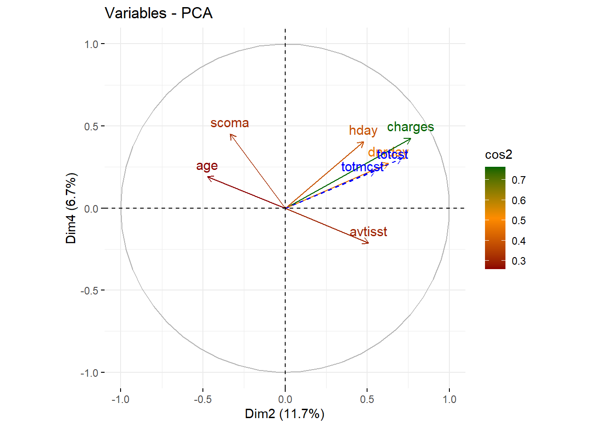
res$quali.sup$v.test Dim.1 Dim.2 Dim.3 Dim.4 Dim.5
female -1.65104 -1.8326 1.491 5.435 1.11773
male 1.65104 1.8326 -1.491 -5.435 -1.11773
dzgroup_A.M.S -0.62799 17.1682 -6.542 -4.969 4.31987
dzgroup_C -0.81403 -0.7242 -1.830 -3.922 -3.98072
dzgroup_C.C -2.43380 -5.3120 -1.284 0.620 -2.22256
dzgroup_CHF -7.86781 -3.7214 -3.623 -3.357 -1.43116
dzgroup_Coma 3.65747 -15.5227 8.274 13.036 8.15675
dzgroup_COPD -7.32658 -3.2693 0.446 -0.918 0.81556
dzgroup_L.C -4.45063 -9.7598 1.457 0.688 -3.04857
dzgroup_M.M 9.09764 3.0270 3.078 -2.042 -8.92794
dzclass_A.M 6.36089 20.4657 -4.532 -6.824 -2.33147
dzclass_C -5.12371 -11.2237 0.676 0.909 -3.77688
dzclass_C.C.C -9.37111 -4.5329 -2.940 -4.972 -2.88139
dzclass_Coma 3.65747 -15.5227 8.274 13.036 8.15675
num.co_0 -0.44267 2.2007 1.752 0.317 3.04536
num.co_1 1.44437 -0.6786 1.270 1.878 -0.37520
num.co_2 -0.07757 0.2711 -0.589 -1.790 -0.82885
num.co_3 -1.45260 -1.5200 -1.912 -0.698 -1.70926
num.co_4+ 0.00064 -0.3101 -1.174 0.034 0.00018
$11-$25k -2.42117 1.1960 -1.576 0.437 0.32155
$25-$50k 1.33213 2.9623 0.649 -1.441 -0.22836
>$50k -0.34297 4.2306 -1.711 0.862 -0.64013
under $11k -2.66857 -3.0854 -1.581 -1.149 -1.28374
O 2.33845 1.4997 -0.061 1.232 -1.18574
W -2.33845 -1.4997 0.061 -1.232 1.18574
diabetes_no 0.32275 1.9187 3.243 -2.191 -2.57661
diabetes_yes -0.32275 -1.9187 -3.243 2.191 2.57661
dementia_no 2.07602 9.3954 -0.980 -4.233 -2.39679
dementia_yes -2.07602 -9.3954 0.980 4.233 2.39679
ca_metastatic -0.99356 -9.5899 1.734 -0.224 -5.08296
ca_no -4.04543 4.5827 -3.845 -1.157 6.62144
ca_yes 5.65017 2.8693 3.054 1.564 -3.44395
dnr_no 0.22144 6.4275 -0.753 -3.410 -0.46092
dnr_yes -0.22144 -6.4275 0.753 3.410 0.46092
adlp_0 -6.92021 1.7993 -2.221 -4.274 -1.58640
adlp_1 -5.38907 -1.5761 -3.351 -2.000 -0.37078
adlp_2 -4.15670 -0.7636 -1.515 -0.785 -1.81855
adlp_3 -2.98326 -0.5117 -1.368 0.042 -2.31344
adlp_4 -2.00696 -1.1881 -0.064 0.540 -2.15725
adlp_5 -4.41182 -1.3639 -1.759 0.557 -0.31373
adlp_6 -1.26642 -0.8948 -2.113 -0.641 0.41503
adlp_7 -1.21747 -1.5896 -0.050 -0.687 -1.11864
adls_0 -3.20465 10.0286 -3.173 -9.263 -2.34952
adls_1 -1.66548 1.6554 -1.358 -2.312 0.13606
adls_2 -2.45758 2.1378 -0.307 0.102 0.02333
adls_3 -1.11847 0.0064 -0.578 1.059 0.25619
adls_4 -2.48410 -1.7665 -1.022 3.054 0.04176
adls_5 -1.39682 -2.1859 1.517 2.447 0.62252
adls_6 -1.92384 -3.6158 -0.309 4.159 0.40438
adls_7 -2.10945 -6.8786 1.062 6.785 2.23702
death_yes NaN NaN NaN NaN NaN
hospdead_yes NaN NaN NaN NaN NaN
<2 mo. follow-up 4.52463 -20.3249 6.560 -11.994 -6.92258
adl>=4 (>=5 if sur) -3.56563 15.9394 -5.189 8.488 6.83292
Coma or Intub -0.63847 8.6363 -1.122 6.488 1.98057
no(M2 and SIP pres) 0.13452 4.1313 -1.319 3.438 0.38740
SIP>=30 -1.66739 3.1051 -2.040 1.539 -0.25346